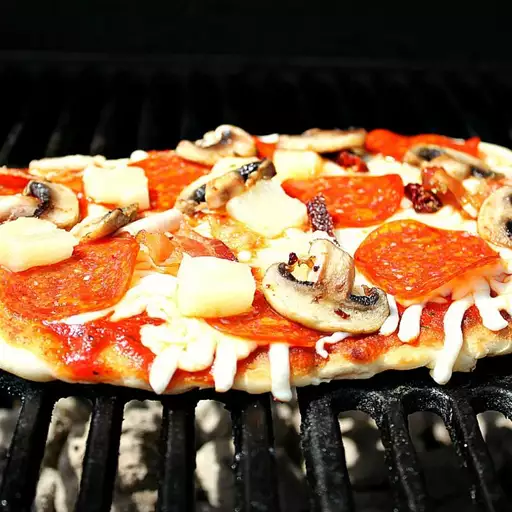

Pizza
Description
This chocolate ice cream recipe is rich, sweet, creamy, and easy to make with just eight ingredients you likely already have on hand.
Ingredients
- 3 ½ cups all-purpose flour, or as needed
- 1 envelope Fleischmann's® Pizza Crust Yeast
- 1 tablespoon sugar
- 1 ½ teaspoons salt
- 1 ⅓ cups warm water (120 to 130 degrees F/50 degrees C)
- ⅓ cup oil
- ½ cup pizza sauce, or to taste
- ½ cup shredded mozzarella cheese, or to taste
Steps
- Start a charcoal fire or preheat a gas grill to medium-high heat.
- Combine 2 cups flour, undissolved yeast, sugar, and salt in a large bowl. Add warm water and 1/3 cup oil; mix until well blended, about 1 minute. Gradually add enough flour to make a soft dough that forms a ball and is slightly sticky. Knead on a floured surface, adding additional flour if necessary, until smooth and elastic but not sticky, about 5 minutes.
- Divide dough into 8 portions. Pat or roll dough on a well-floured counter to about 8-inch circles; they do not need to be perfect.
- Brush both sides of crusts with additional oil. Using hands, lift each crust carefully and place on grill. Cook for 3 to 4 minutes until bottoms are lightly browned and tops look set. Using long handled tongs, remove crusts from grill and place on a baking sheet with grilled-sides facing up.
- Lightly add sauce to the top of each grilled crust, then top with mozzarella cheese.
- Carefully slide pizzas back onto the grill. Cook an additional 3 to 4 minutes until bottom crusts are browned and cheese is melted. Remove from the grill and serve immediately.
Extra Tips
To knead the dough, add just enough flour to the dough and your hand to keep the dough from sticking. Flatten dough and fold it toward you. Using the heels of your hands, push the dough away with a rolling motion. Rotate dough a quarter turn and repeat the folding, pushing, and turning steps. Keep kneading dough until it is smooth and elastic. Use a little more flour if dough becomes too sticky, always working the flour into the ball of dough.
The Dough (Step 2) may be made up to 24 hours in advance, covered, and stored in the refrigerator. Punch down dough and complete remaining steps when ready to make pizzas.
Back To Homepage Back To Top